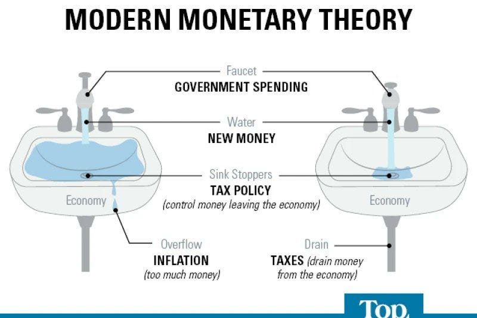

Chancellor challenges the assumption that AI-driven displacement mirrors past technological transitions. He notes that Eric Schmidt claimed displaced workers historically created more jobs than were destroyed, but argues this parallel fails under current conditions.
The author contends that “historically, we had growing populations that needed more consumable goods – this is ceasing to be true.” Previous economic transitions succeeded because labor shortages existed elsewhere. Farm workers became factory workers; factory workers shifted to services; service workers transitioned into cognitive roles. This progression assumed surplus unmet demand for human intelligence and expanding population.
Chancellor emphasizes the fundamental difference: “In a world where AI is more intelligent than the smartest human beings, and also displaces all non-regulated knowledge work, what kind of employment are people supposed to find?”
He projects rapid timeline concerns, stating knowledge automation “will accelerate dramatically over the next 3-5 years as AI capabilities compound.”
Unlike previous technological shifts that took generations, AI capability improvements compound rapidly. Each advance in AI capability accelerates the next, creating exponential rather than linear change. This compression of timeline leaves little room for organic economic adjustment or retraining programs.
Previous technological transitions succeeded because:
None of these conditions hold for AI displacement:

Chancellor warns of a deflationary spiral if mass unemployment occurs without intervention:
This differs from historical unemployment because AI doesn’t consume goods and services. Previous automation replaced human labor but created jobs in production, maintenance, and operation of the new technology. AI automation creates minimal compensating employment.
The essay proposes economic solutions: Universal Basic Income funded through a 1% wealth tax on net worth exceeding $10 million. This mechanism would prevent deflationary spirals by withdrawing capital from circulation while maintaining consumer purchasing power.
The proposal targets several goals simultaneously:
A 1% annual wealth tax on net worth exceeding $10 million would:
The $10 million threshold ensures:
Chancellor dismisses several alternatives:
Retraining Programs: Cannot prepare workers for jobs that don’t exist or that AI performs better
Job Guarantee Programs: Create make-work that adds no economic value and may damage dignity
Means-Tested Welfare: Creates bureaucracy, stigma, and perverse incentives against work
Raising Minimum Wage: Accelerates automation and reduces employment opportunities
Labor Market Restrictions: Reduces economic efficiency without solving displacement problem
Chancellor ultimately advocates capitalism’s reformation rather than abandonment, urging voters to support leaders who comprehend AI’s inevitability and champion monetary restructuring.
He argues that capitalism’s core mechanisms—price signals, consumer choice, competitive markets—remain valuable even in a highly automated economy. What must change is how purchasing power is distributed when most people can no longer sell their labor.
Without intervention, Chancellor warns of:
The essay emphasizes urgency: implementation of economic reforms takes time, requiring:
Starting this process now, before mass displacement occurs, provides opportunity for measured implementation. Waiting until crisis hits leaves only emergency measures with unpredictable consequences.
Chancellor urges readers to:
The essay concludes that AI represents not merely another technological shift but an economic endgame requiring fundamental restructuring of how purchasing power is distributed. The choice is not between capitalism and socialism, but between capitalism reformed to accommodate post-labor economics or economic collapse followed by unpredictable radical change.
Time to implement measured reforms is limited. The window for avoiding crisis through preparation is closing as AI capabilities accelerate. Political will to address this reality before crisis hits remains the primary obstacle.
Read and subscribe on Substack